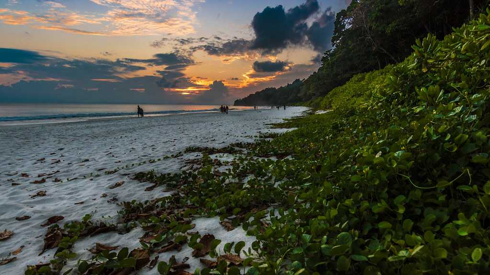
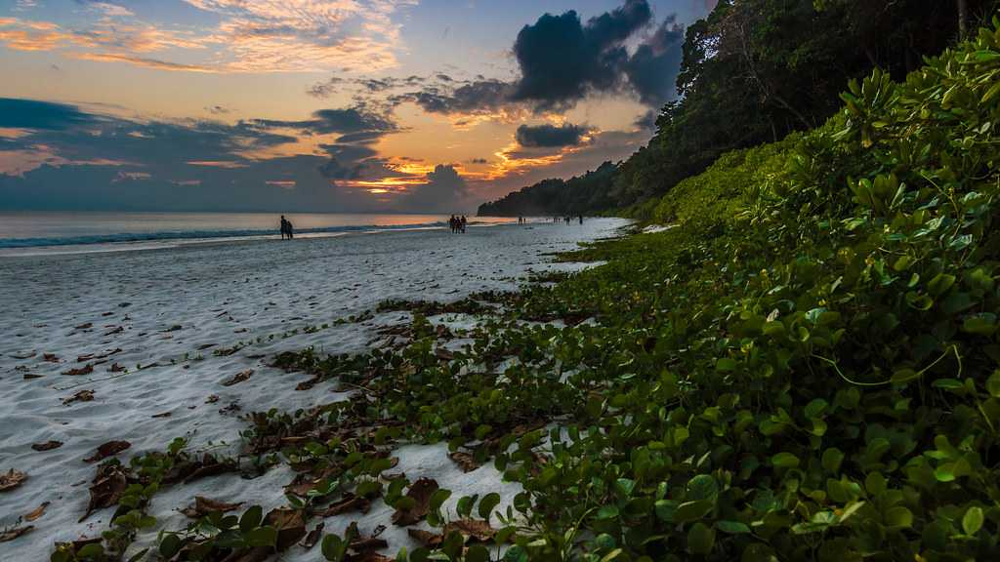
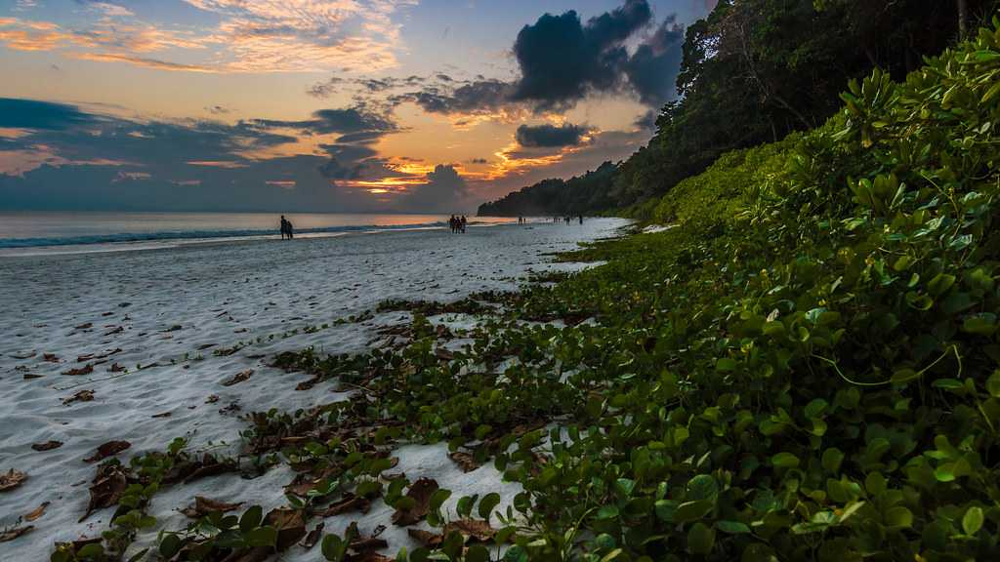
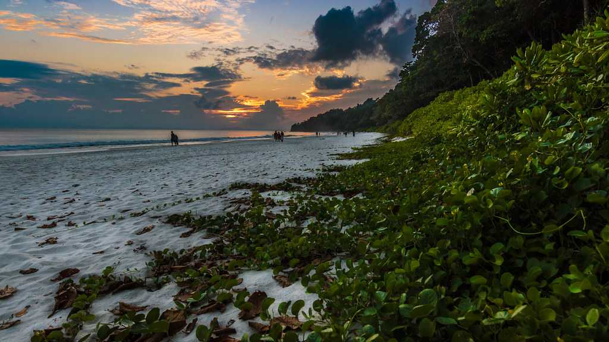

Awarded with the title of 'Asia's Best Beach' by the TIMES magazine in 2004, Radhanagar Beach with its turquoise blue waters and powdery white sands lives up to the moniker. Its vast shores of endless white grains stretch across 2 kilometres, making it a prime attraction of the Andaman and Nicobar Islands. Located at a distance of a mere 7 kilometres from the much adored Vijaynagar Beach and approximately 12 kms from the main Havelock Island, it is a hop, skip and jump away to serenity and beauty.
Being located so close to the main Havelock Beach has made it a favourite among tourists. It is also among the most reputed places to enjoy water sports in the Andamans. The best way to reach Radhanagar Beach is via a ferry from Havelock Island.
Apart from enjoying the spectacle of the beach and the melange of colours, visitors can also enjoy water sports like boating, parasailing, and scuba diving. Food stalls and vendors can be seen on the fringes of the shore, keeping travellers refreshed with the provision of fresh and delicious seafood as well as beverages. You can also book beach beds, parasols, and umbrellas while they spend hours merely lounging at this exquisite wonderland.
Havelock Island is one of the largest and most popular islands in Andaman and Nicobar. Spread over a massive area of 113.93 square kilometres, it is situated 57 km north-east of the capital city Port Blair. Havelock Island is a paradise of silky white sand beaches, crystal blue water, rich corals and verdant forests. There is no dearth of beauty on this little island as the reputed and much-loved Radhanagar and Vijaynagar Beaches are also right on its southern shores. Havelock Island is also a favourite amongst those who want to engage in scuba diving, snorkelling, and deep sea diving.
The pristine shores and the aquamarine waters of the island stretch right across its expanses! Elephant beach and Kalapather beach are two other destinations where the sunrise and sunsets are divine. A long walk along the stretch of the sand is the perfect way to explore the island on your own.The island was named after a British General and comprises of Ritchie's Archipelago and a collection of five villages. Surrounded by the most popular beaches on Andaman, it is among the most popular places to visit on the archipelago.